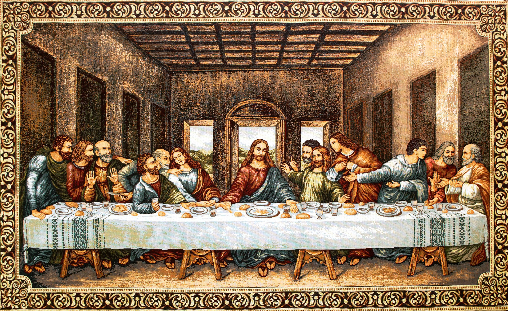

Comida.
 La última cena, Da VinciLa comida no es solo una necesidad básica, es una experiencia que trasciende lo puramente físico. Para mí, comer es un acto de comunión, una manera de conectarme con los demás y crear lazos que van más allá de la mesa. La comida no solo alimenta el cuerpo, sino también el alma y los vínculos que compartimos con amigos y familiares.
Desde que era niño, he apreciado la magia que se desencadena alrededor de una mesa bien servida. Los aromas que llenan la cocina, la charla animada y las risas que se desatan, son como hilos invisibles que nos unen. Ya sea en casa, en un restaurante o en una cena al aire libre, cada bocado se convierte en un pretexto para la conversación, el intercambio de historias y la creación de recuerdos.En resumen, comer y compartir con los demás es para mí una manifestación de amor, cuidado y conexión. La comida es la chispa que enciende la llama de la amistad y la unidad. A través de cada comida compartida, creamos recuerdos inolvidables y forjamos relaciones más fuertes. Así que, cada vez que me siento a la mesa, no solo disfruto de la deliciosa comida, sino que celebro la oportunidad de unirme a otros en un vínculo que es más profundo que cualquier plato servido.